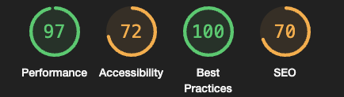
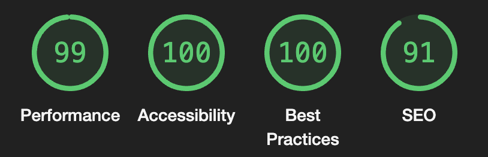
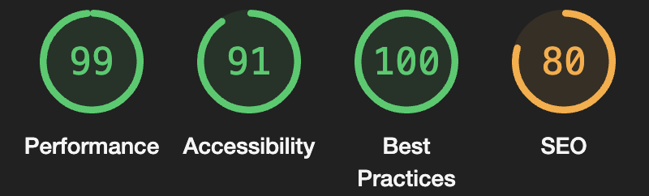
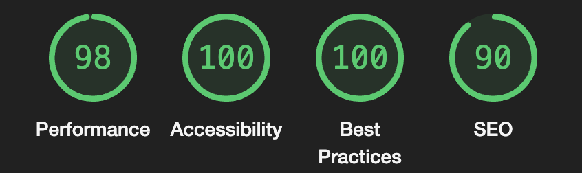
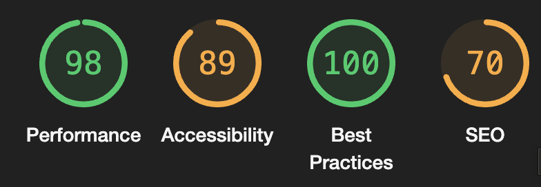
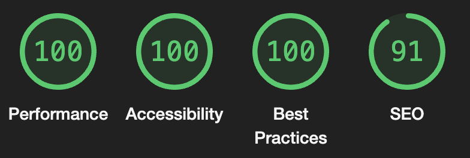
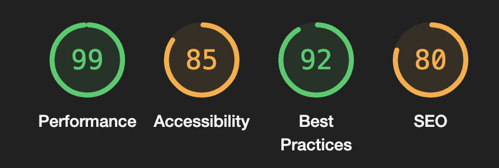
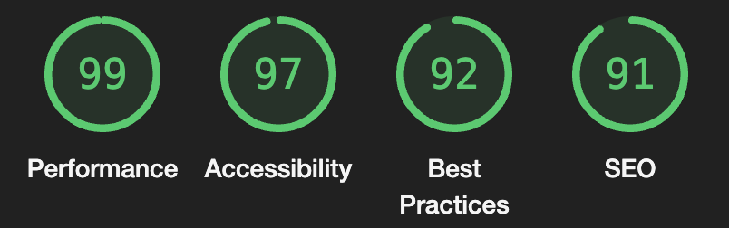
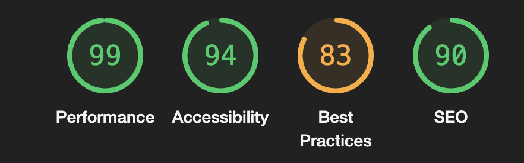

Litt intro
i dette oppgave så jeg analyserer nettsiden min så jeg ser hvor bra den er, hva som er dårlig eller mangler, Jeg analyserer nettsidene mine ved hjelp av to vertøy en som er innbyged i chorme den andre er en nettside som hetter wave.webaim, Jeg tok skjærm biilder av før og etter jeg fiksa på nettsidene, jeg skrev en vanlige tekst og en table som ta for seg det samme, men litt annledes
Analyse av index siden
Performance
Jeg satt inn nettsiden min, skolen server og jeg brukte lighthous og fikk dette resultat på index siden.
jeg fikk 97 på Performance, det jeg gjøre for å fikse på det er at jeg fjarna ting på i css som ikke er i bruk og som er unødvendig, det gjør at nettsdien ikke bruker unødvendig tid på å gå gjennom ting som ikke viktig. Jeg gjøre også bildene mindre så ikke nettsiden bruker tid på å laste ned stor bilder, det gjør at nettsiden for bedre Performance.
Accessibility
jeg fikk 96 på Accessibility, det jeg gjøre for fikse på det var at jeg hadde glemt "alt" tagen på noen av bildene. Jeg la til alt tagene på alle bilden.Silk at jeg fikser på nettsdien. Alt tagen er viktig for Accessibility fordi den forklaere bilden med tekst og i tilfelle bilden ikke lastes opp så vil ikke bukeren så noe inforamsjon om hva det bilde av men med alt taggen så vil brukeren få inforamasjon om hva bilde handler om. Og jeg hadde litt feil på rekkefølge av h tagene, så jeg måtte bytte det
Jeg brukte aria-label på alle linke til å forkalrer hva de gjør og hva de handler om.
best Practices
jeg hadde 100 på den så jeg gjøre ikke noe serlig med det, siden jeg hadde 100 på den
SEO
jeg hadde den på 80, det jeg gjøre for å fikse på derty jeg la inn meta data/tagene og viksa på linker som ikke har noe å gjøre, jeg gjøre det ved å legge inn aria-label
Slut resultat
Analyse av SEO VS UU siden
Performance
jeg fikk 99 på Performance i SEO VS UU siden, jeg fikk det så bra fordi jeg hadde ikke mye bilder på siden så det gjør at Performance bil så bra.
Accessibility
Jeg fikk 91 på Accessibility, Jeg hadde dårlig Kontrast på testen på siden, jeg fiksa det ved å endra på fargene på teskten så det passer bedre med nettsiden, og jeg hadde en h taggen som ikke var i rekke følge så jeg fiksa på det
Jeg brukte aria-label på alle linke til å forkalrer hva de gjør og hva de handler om.
best Practices
jeg hadde 100 på den så jeg gjøre ikke noe serlig med det, siden jeg hadde 100 på den
SEO
jeg hadde den på 80, det jeg gjøre for å fikse på det var at jeg la inn meta data/tagene og viksa på linker som ikke har noe å gjøre, jeg gjøre det ved å legge inn aria-label
Slut resultat på hjemsiden:
Analyse av CSM siden
Performance
jeg fikk 98 på Performance i CMS siden, det jeg gjøre for å fikse på det var jeg jeg minska storelse på bilden
Accessibility
Jeg fikk 89 på Accessibility, Jeg hadde dårlig Kontrast på testen på siden, jeg fiksa det ved å endra på fargene på teskten så det passer bedre med nettsiden så for at bruker har det mye bedre da leser på nettsdien, og jeg hadde noenb "h" tagger som ikke var i rekke følge så jeg fiksa på det.
best Practices
jeg hadde 100 på den så jeg gjøre ikke noe serlig med det, siden jeg hadde 100 på den
Cms
jeg hadde den på 70, det jeg gjøre for å fikse på SEO det var at jeg la fiksa på meta data/tagene og fiksa på linker som ikke har noe å gjøre på nettsdien, jeg gjøre det ved å legge inn aria-label, jeg hadde også skrevet "meta viewport" feil så jeg fiksa på det også
Slut resultat
Analyse av kontakt siden
Performance
jeg fikk 99 på Performance i kontakt siden, det jeg gjøre for å fikse på det var jeg jeg minska tok bort som ikke var viktig, og gjøre bilden mindre
Accessibility
Jeg fikk 85 på Accessibility, Jeg hadde dårlig Kontrast på testen som var på siden, det jeg gjøre for å fikse på det var aqt jeg tilpasse skrift fargen så den for bedre kontrakt med bakgrunnen og tekstern bil mere behaglig å lese. Jeg hadde også noen linker som ikke hadde tekst på seg, for å fikse på det så jeg la inn "aria-label" og forklarete med tekst hva linker gjøre og hvor de er linket til. På kontakt side så hadde jeg brukt iframe men jeg hadde glemt og legge in title taggen in i iframe, så jeg fiksa det, og jeg hadde noe "h" tager so ikke var riktig brukt så jeg fiksa på de.
best Practices
jeg hadde 92 jeg prøve å fjerne alle javascript kode som ikke var viktig
SEO
jeg hadde den på 80, det som gjøre SEO dårlig hos mede var at jeg hadde skrevet meta data/tagene og feil så jeg fikse på dem.
Slut resultat
Analyse av Analyse siden
Performance
jeg fikk 99 på Performance i kontakt siden, det jeg gjøre for å fikse på det var jeg jeg minska tok bort som ikke var viktig, og gjøre bilden mindre for prøve å få den til 100.
Accessibility
Jeg fikk 94 på Accessibility, Jeg hadde dårlig Kontrast på testen som var på siden, det jeg gjøre for å fikse på det var aqt jeg tilpasse skrift fargen så den for bedre kontrakt med bakgrunnen og tekstern bil mere behaglig å lese. . og jeg hadde noe "h" tager so ikke var riktig brukt så jeg fiksa på de.
best Practices
jeg hadde 83 og grunne var at jeg hadde bilder som ikke så bra ut så, så det jeg gjøre er å fikse på de slikk at alle bilden ser fine.
Cms
jeg hadde den på 90 SEO, jeg hadde med alle meta tagene.
Slut resultat
Tilgjenglhetarklæring
her er min Tilgjengliheterklaring .